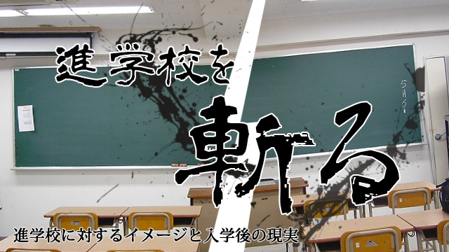
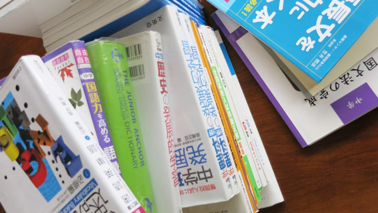

今月は「進学校を斬る」と題して、一般に人々が進学校に対して抱いている「幻想」とその「実態」について解説していきたいと思います。
私自身、私立の進学校に中学校・高校と6年間通い、塾の講師になった後は様々な高校に取材を行ってきました。また、高校生を実際に教えた経験から、生徒たちの生の声もたくさん聞いています。
それらの経験に照らし合わせてみると、世間一般の進学校、特に私立進学校に対するイメージが現実とだいぶ異なっているように感じるのです。そして、この現実とイメージのギャップは、実際に進学した生徒や進学させた保護者の不満につながっていきます。
「先生！ うちの子の学校、私立なのに全然面倒見てくれないんですよ。こんなことならランクを下げて公立に入れておけばよかった！」「うちの学校、意外とゆるいよ。小テストも適当で、勉強しなくてもなんとかなるし。こんなんで受験大丈夫かな」
こんな声をこれまで何度も聞いてきました。入学前のイメージと入学後の実態が食い違うと、その不満はどんどん増幅していきます。
あるサービスを「提供できない」とあらかじめ言われており、実際に提供されないのと、「提供する」と言われたのに提供されないのでは、当然不満の量には差が出ますね。特に後者の場合、ただサービスをもらえない不満に加えて、約束を違えられたという「不信」が付いてきますから。
高校の場合、もちろん提供できないものをできると言っているわけではありません。もしそう言っているならただの詐欺ですからある意味話は簡単です。実は、この問題の核心は、言葉の定義が統一されていないことにあるのです。
「受験指導」とはいったいなにか？

私立進学校と県立高校を比べた際に一番目立つ特徴は「受験指導」ですが、この「受験指導」という言葉、実はとてもあいまいなものです。
読者の皆さん、「大学受験の指導」というとどのようなものが思い浮かびますか？ 一昔前に受験を終えた保護者の皆さんであれば、予備校に通われた経験があるかもしれません。そのときのことを思い出してください。なにか「特殊」なことをやっていましたか？ 講師の講義を受けて、志望校と勉強法についてチューターにアドバイスを受けて、それで終わりだったはずです。
1. 小中学生の受験指導
お子さんの中学入試、あるいは上のお子さんで高校入試を経験された保護者の皆さんはいかがでしょう？ 授業があり、面談があり、授業後の質問受付があり、保護者向けの説明会があり、と塾のサービスは多岐にわたったことでしょう。
これらの経験を総合すると、小中学生向けの指導と高校生向けのものを比べたとき、小中学生向けのほうが格段に「手厚い」といえます。
この違いは、対象とする生徒の精神的な成長度合いから生まれます。まだ子どもであり、大人の導きを必要とする小中学生においては、保護者や先生がなにをするかが合否に強い影響を与えます。本来ならば子どもが知っているだけでよいことでも、とりあえず保護者も知った方が安心です。
家での勉強を自発的に行うことが難しい場合には、親が家で先生役をしなければならない場合もあります。そして、この状況は高校入試まで続きます。生徒・保護者・塾・学校。これらのプレイヤーが力を合わせて合格を勝ち取るわけですから、ある意味高校入試までは「チームプレー」です。
2. 高校生の受験指導
大学入試になるとこの状況は大きく変わります。プレイヤーからまず外れるのが親であることは想像が付くかと思いますが、塾や学校もその重要性がどんどん低くなるのです。
本質的に高校以上になると、塾や学校は「情報を与えるだけの場所」になります。ある教科の重要な知識を伝えはしますが、その知識を吸収したかどうかをチェックしたり、吸収していない場合には吸収するよう仕向けることは本来の役割ではありません。
これは建前や「あるべき論」ではなく、大学入試の結果から逆算したものです。つまり、高校になっても小中学校向けの指導を受け続けた生徒は、端的に言って「受からない」のです。
大学入試では、やらなければならないことが中学受験や高校受験に比べて非常に多くなります。膨大な量の知識を詰め込まなくてはなりませんし、問題を解く際の解法をその場で作り出していく能力も求められます。それら試験からの要求に対して、学校にしろ塾にしろ先生がすべてを指示することは事実上不可能です。
よって、基本的な勉強の方針を教わったら、それを自分で発展させて行動する力が生徒本人に不可欠なのです。また、勉強を「させる」働きかけも高校生にはなかなか通じません。高校生にもなると、生徒の自我は完全に確立されています。外からの働きかけは多少の影響は与えるものの、根本的なところを変えるのはほぼ不可能でしょう。いくら「勉強しろ」と先生が言ったところで、聞き流されて終わってしまうのです。
まとめ
- 進学校に進学した生徒やその保護者は入学前とのイメージギャップに不満を抱くケースが多い。
- 小中学生までの受験指導は生徒・保護者・塾・学校のチーププレーである。
- 高校生の受験指導は本人の自主性が不可欠であり他者の関与は「情報を与えるだけ」になる。
次回の記事では受験指導の核となる「授業」と「合否読み」についてお話します。学校や塾における基本機能となる授業が子どもに与える影響、さらに学校説明会や個別相談会で授業に対して質問するポイントもご紹介します。合否読みに関しては高校生を長年教えてきた経験をもとに「学校」と「塾・予備校」の比較を交えながらお話します。